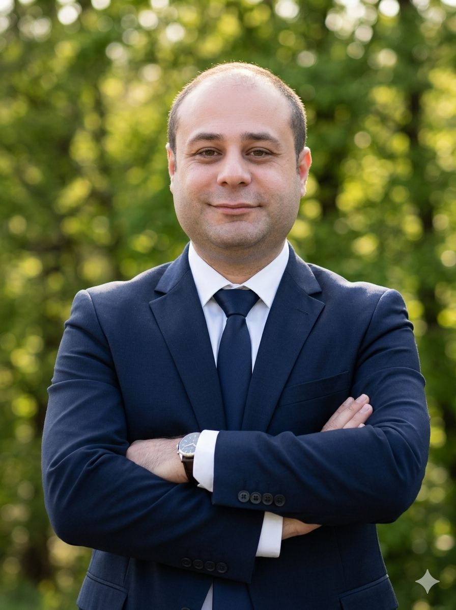

Perkoa Zinc Mine — TSF Capacity Extension
Construction management of an urgent berm-raising programme that provided approximately nine months of additional storage capacity.
Project details →PMP® | GMICE | SCRS Fellow | Hackathon Raptors Fellow
Delivering complex mining infrastructure, tailings storage and renewable energy projects through construction leadership, risk-based decision-making and practical engineering execution.

International project experience across mining infrastructure, tailings storage facilities, wind energy, civil works and renovation projects in Türkiye and Burkina Faso.
Construction management of an urgent berm-raising programme that provided approximately nine months of additional storage capacity.
Project details →Multidisciplinary coordination of a new tailings storage facility involving earthworks, geomembrane lining, drainage and quality control.
Project details →Site leadership for the delivery and erection of seven wind turbines, including an engineered blade transportation solution for mountainous terrain.
Project details →This website provides a structured index of evidence supporting the fellowship criteria of Responsibility, Leadership, and Insight & Experience.
Open evidence index